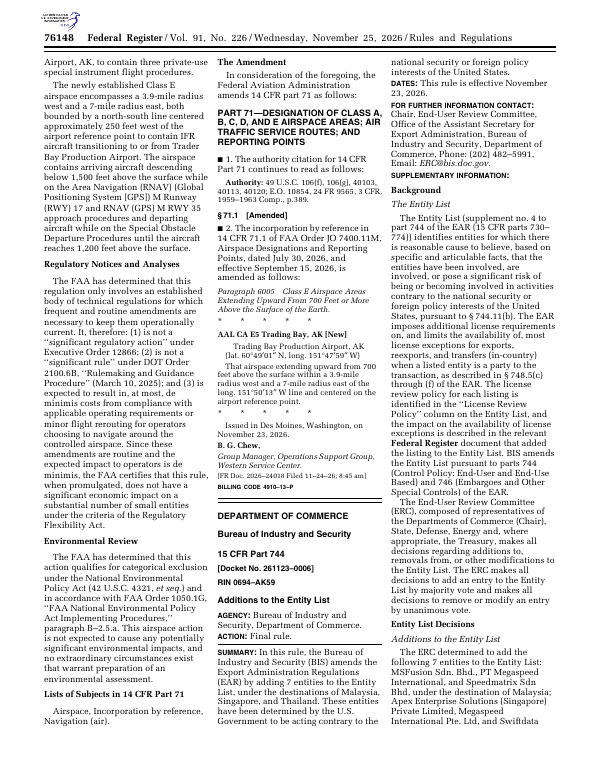

公司治理
复职已确认，独立调查继续
NVIDIA董事会11月23日一致同意恢复黄仁勋总裁、CEO及董事职务；公司称独立调查继续进行。复职本身不代表调查已有结论。
NVIDIA · GOVERNANCE · EVIDENCE
从公开报道到董事会去留，再到出口管制与国会问询。把已经发生的动作，与仍待证实的判断分开读。
TL;DR
从同一组资料中，分别呈现已经确认的动作与尚待证实的判断。
黄仁勋已复职，独立调查继续；贸易限制已有正式文件，情报指控仍存分歧。股价比较统一采用常规交易收盘价。
公司治理
NVIDIA董事会11月23日一致同意恢复黄仁勋总裁、CEO及董事职务；公司称独立调查继续进行。复职本身不代表调查已有结论。
出口管制
BIS将Megaspeed等七家实体列入实体清单：11月23日生效、25日刊登公报。相关EAR物项须申请许可，原则为推定拒绝；列单不等于刑事定罪。
情报评估
Reuters于11月26日援引匿名知情人士称，美方官员对情报的解释存在分歧。这是媒体对匿名评估的报道，尚无公开机构一致结论。
市场价格
NVDA较10月6日收盘239.24美元下跌37.59%。两端均为常规交易收盘价；价格变化不能单独证明某一事件对股价的影响。
阅读边界：复职、行政列单与调查程序可以由原始文件确认；情报身份、知情程度及违法责任仍需分别举证。未被调查与经过调查获免责，是不同状态。
THREE PARALLEL RECORDS
公司治理、出口监管与情报说法并行发展。沿每一行阅读，点击节点查看日期、来源和证据边界。
日期按区段排列，间距不代表时长；三条线不表示因果关系。
董事会与管理安排
董事会宣布启动独立调查；启动程序不等于公布最终结论。
NVIDIA 董事会声明 2026-11-08NVIDIA宣布黄辞任，Kress出任临时CEO，Jones出任董事长。
NVIDIA《NVIDIA Announces CEO Transition》公司设立国家安全与出口管制监督委员会；这是制度安排。
NVIDIA：成立国家安全与出口管制监督委员会董事会一致恢复黄的职务，同时明确独立调查继续。
NVIDIA · 复职公告官方动作与程序
联合声明署日11-16，网页11-17发布；司法部牵头刑事调查，BIS协作。
DOJ / Commerce · 联合声明众院能源商务委员会要求NVIDIA及商务部不晚于12-02提供简报。
众院能源商务委员会：要求Nvidia及商务部提供简报将Megaspeed等七家实体列入清单；行政动作不等于刑事定罪。
BIS · 最终列单规则与11-23生效的是同一规则。此处单列正式出版日期，避免混淆。
BIS · 最终列单规则未公开情报的转述
原发书目已定位，付费正文受限；相关情报判断未见公开原始材料。
FT · 11-06原报WSJ于11-25报道前一天闭门简报：未见中方策划关系的证据。原始情报未公开。
WSJ · 闭门简报报道Reuters援引匿名来源描述评估分歧；不是统一公开的机构结论。
Reuters · 情报评估分歧实线边框表示文件或公开动作；虚线边框涉及媒体转述的未公开判断。展开后可直接查看原始出处。
PEOPLE · INSTITUTIONS · EVIDENCE
把关系的性质与证据等级一起看。选择主题，再点击连线标签或下方关系按钮，查看其来源和限定条件。
连线表示特定关系或调查动作，不能沿连线推导知情、共谋或违法责任。
保留核心人物与公司治理关系；所有任命、表态和被报道的私人关系均注明日期与不同的证据范围。
图可横向滑动；图下文字按钮也能查看全部关系与证据。
行政列单、刑事调查和国会监督各有职责。实线表示已找到支持该程序动作的官方材料，不代表责任已经认定。
图可横向滑动；图下文字按钮也能查看全部关系与证据。
此层刻意保留虚线与限定词。私人关系、情报联系、是否由情报机关策划，以及某国是否调查，是四个不同问题。
图可横向滑动；图下文字按钮也能查看全部关系与证据。
董事会先宣布独立调查，随后宣布黄仁勋辞任，并于11月23日一致决定恢复其职务。
证据边界：这是公司的人事与治理决定。复职公告同时说明独立调查继续，不能据此认定所有问题已经排除。
NVIDIA交接公告任命Kress为临时CEO，并继续兼任CFO。
证据边界：图中标注的是11月12日至黄仁勋复职前的管理安排，不将历史临时职位显示为当前职位。
NVIDIA交接公告任命Harvey C. Jones为公司首任董事长。
证据边界：职务任命本身有官方公告；不能由此推断个人对董事会各项决策的私下意见。
AFP记录特朗普向记者表示不介意黄仁勋回归NVIDIA。
证据边界：公开表态与匿名报道中的幕后施压、具体电话内容是不同命题；本连线只表达这一公开表态。
NYT等媒体报道黄仁勋与Alice Huang的关系。黄仁勋11月8日的公司公开信承认婚外情并道歉。
证据边界：本人公开信确认婚外情，但未在该信中点名对象；不能把信中的T1确认范围扩展为媒体全部细节，更不能从关系推定情报指使。
商务部与司法部联合声明在回溯2025年6月现场核查时，将Alice Huang称为Megaspeed CEO，并描述BIS与她面谈。
证据边界：T1对应官方文件对当时身份与核查程序的记载，不表示当前仍任职。公司另称她于2025年8月30日离职；不同时间与材料分别归属，不自行推定具体交接过程。
Cotton要求商务部长Howard Lutnick调查Megaspeed的所有权、关联关系以及与美国芯片企业的联系。
证据边界：官方信函确认调查请求已提出；信中引用的新闻指控不因此成为官方查实的违法结论。
最终规则发表于《联邦公报》91 FR 76148–76150，文件号2026-23999。
证据边界：行政列单、许可证要求与刑事定罪不同；图中连线仅表达已经生效的行政动作。
两部门的联合声明明确调查分工，司法部主导刑事调查，BIS继续协作。
证据边界：有调查不等于已起诉或罪名成立；转交牵头机构不等于调查终止。
新加坡内政部说明本国调查程序，并表示对Megaspeed及另外六人的调查仍在进行。
证据边界：新加坡本地程序与美国调查不是同一个案件；不同管辖范围的处理结果不可互相替代。
美方联合声明记载，NVIDIA于2025年6月将Megaspeed纳入不销售名单。
证据边界：这确认官方文件对相关合规动作的记载；不能由此推断所有此前或此后的设备流向，也不能证明任何个人的知情程度。
众院能源商务委员会要求不晚于12月2日提供简报；其他委员会与参院银行委员会分别公布访谈及听证安排。
证据边界：不同委员会、文件和日期分别记录。要求答复或安排作证不等于认定违法，也不表示尚未来临的听证已经举行。
NYT、FT等报道援引未公开情报判断；Reuters后续报道描述官员对情报解释存在分歧。
证据边界：未取得公开原始情报。身份、联系、遭监视与受指使是不同命题；不能把报道画成已确认的雇佣或隶属关系。
新加坡内政部公开说明Alice Huang所涉本国调查程序，并表示她未因间谍事项被调查。
证据边界：这只是该国调查范围的说明；未被调查不等于调查后获免责，也不能单独证实或否定情报身份。
不同线型和文字标签共同表示证据级别；分级针对连线上这一具体命题。下载关系与证据数据
官方信函补齐了调查请求的证据。四条历史报价取得了分钟级对照，但分钟收盘值不能还原当时精确到秒的实时响应，成交量也有未解决的异常。
| 原记录 / UTC 时点 | 旧报价 | 同分钟 Close | 结论 |
|---|---|---|---|
| 2025-10-13 发信 / 10-14 公开 | Cotton 官方信函 + Reuters 原稿 | T4 → T1 仅确认发信要求调查 | |
| 11-16 14:54 | $160.64 | $160.3100 | 保留 T4 旧价落在该分钟范围内；实时价与累计量仍待核 |
| 11-16 19:31 | $156.12 | $156.0350 | 保留 T4 旧价落在该分钟范围内；实时价与累计量仍待核 |
| 11-18 13:42 | $160.40 | $160.2423 | 保留 T4 160.40 对应前一分钟 13:41 的 Close，不能移动时间后视作原快照已证实 |
| 11-25 12:41 | $147.21 | $147.2395 | 保留 T4 旧价落在该分钟范围内；精确实时响应尚未恢复 |
另可复算：11-24 19:59 EST 盘后分钟 Close 为 $151.9531，相对常规收盘 $155.38 为 −2.21%（T2 历史分钟字段）；这不验证次日盘前快照。分钟对照 CSV · 来源与口径
市场反应 · 收盘口径
复职日上涨后，NVDA 在随后两个交易日累计回落 9.54%。截至 11 月 25 日收盘，股价较 10 月 6 日比较基准仍低 37.59%。
数据截至 2026-11-25 美国市场收盘 · T2 · 行情数据
11-20 至 11-23
$125.53 至 $165.05
11-23 至 11-25
$165.05 至 $149.30
10-06 至 11-25
$239.24 至 $149.30
选定交易日 · 2026
2026-11-25 · 最近已核收盘
$149.30点选图中日期查看；键盘可用左右方向键切换日期。
图示五个关键交易日；另附 11 月 16 日收盘。
| 交易日 | 收盘价 | 较 10-06 收盘 |
|---|---|---|
| 239.24 | 0.00% | |
| 156.14 | −34.73% | |
| 125.53 | −47.53% | |
| 165.05 | −31.01% | |
| 155.38 | −35.05% | |
| 149.30 | −37.59% |
11 月 16 日收 $156.14，较 11 月 13 日的 $162.85 下跌 4.12%。该日线记录不用于证明此前列示的精确分钟报价。
下图覆盖这段期间的全部 37 个交易日。开盘、最高、最低、收盘与成交量统一取自 Stock Analysis 的常规交易日线表，页面注明上游为 S&P Global Market Intelligence；数据读取于 2026 年 11 月 27 日，已保存随页 CSV。
“较前收”按当日 Close ÷ 上一交易日 Close − 1 计算。首行未载入前一交易日，因此不列日涨跌幅。成交量统一使用同一供应商，不混用旧分钟采集值。
| 交易日 | 开盘 | 最高 | 最低 | 收盘 | 较前收 | 成交量（股） |
|---|---|---|---|---|---|---|
| 242.10 | 243.37 | 238.93 | 239.24 | — | 101,701,855 | |
| 237.69 | 239.08 | 236.38 | 237.47 | −0.74% | 81,772,404 | |
| 234.92 | 237.07 | 229.85 | 230.48 | −2.94% | 118,697,435 | |
| 233.84 | 233.92 | 229.11 | 229.28 | −0.52% | 84,645,559 | |
| 228.73 | 228.86 | 224.90 | 226.32 | −1.29% | 70,690,254 | |
| 224.34 | 228.64 | 223.06 | 228.52 | +0.97% | 84,036,941 | |
| 225.53 | 226.00 | 219.64 | 221.30 | −3.16% | 118,730,083 | |
| 215.30 | 218.47 | 212.85 | 217.23 | −1.84% | 127,087,854 | |
| 216.56 | 218.68 | 213.32 | 214.13 | −1.43% | 121,252,522 | |
| 218.10 | 219.62 | 214.70 | 217.09 | +1.38% | 98,684,721 | |
| 215.98 | 218.46 | 212.77 | 216.47 | −0.29% | 79,609,078 | |
| 220.96 | 222.19 | 217.66 | 221.97 | +2.54% | 87,085,733 | |
| 217.13 | 218.88 | 211.26 | 212.21 | −4.40% | 125,407,615 | |
| 210.99 | 213.85 | 210.18 | 210.96 | −0.59% | 80,189,765 | |
| 213.11 | 217.75 | 212.61 | 216.00 | +2.39% | 90,829,293 | |
| 218.31 | 219.19 | 215.53 | 217.94 | +0.90% | 84,799,695 | |
| 219.92 | 219.99 | 214.47 | 215.38 | −1.17% | 93,030,154 | |
| 214.36 | 215.33 | 212.08 | 213.66 | −0.80% | 77,568,070 | |
| 208.94 | 209.06 | 200.92 | 204.64 | −4.22% | 168,386,423 | |
| 207.53 | 209.98 | 201.66 | 202.06 | −1.26% | 119,272,174 | |
| 207.96 | 209.14 | 205.93 | 206.69 | +2.29% | 91,943,391 | |
| 203.50 | 206.79 | 199.68 | 200.13 | −3.17% | 149,033,316 | |
| 196.07 | 196.25 | 181.46 | 181.60 | −9.26% | 306,127,783 | |
| 191.10 | 194.90 | 185.22 | 186.64 | +2.78% | 180,212,285 | |
| 173.07 | 179.92 | 170.24 | 178.67 | −4.27% | 462,719,328 | |
| 173.97 | 174.69 | 165.89 | 168.89 | −5.47% | 429,273,205 | |
| 172.80 | 177.54 | 170.77 | 173.73 | +2.87% | 339,214,801 | |
| 151.01 | 167.14 | 148.80 | 166.19 | −4.34% | 747,707,648 | |
| 169.91 | 170.00 | 158.39 | 162.85 | −2.01% | 365,796,552 | |
| 159.02 | 163.20 | 155.01 | 156.14 | −4.12% | 333,822,062 | |
| 156.90 | 158.19 | 150.33 | 155.46 | −0.44% | 406,985,086 | |
| 159.19 | 159.70 | 150.40 | 150.96 | −2.89% | 349,791,392 | |
| 152.92 | 158.13 | 145.71 | 145.98 | −3.30% | 322,940,099 | |
| 143.52 | 143.73 | 124.50 | 125.53 | −14.01% | 633,418,432 | |
| 167.04 | 171.50 | 156.93 | 165.05 | +31.48% | 782,593,289 | |
| 159.10 | 159.92 | 150.50 | 155.38 | −5.86% | 386,223,640 | |
| 144.06 | 150.37 | 141.17 | 149.30 | −3.91% | 366,571,889 |
该表支持上述期间的日线及同一口径成交量（T2），不替代交易所逐笔数据，也不补足旧分钟图、盘前曲线或异常交易归因的证据。
美国行情统一使用常规交易日的 Close 字段，避免混用盘前、盘后、盘中最高价和收盘价。相对涨跌按“所选日期收盘价 ÷ 基准日收盘价 − 1”计算，再乘以 100%；这里展示价格变化，不包含股息再投资。选择较晚基准时，此前日期的百分比仅表示相对价格高低。
重点日期收盘价已由 Yahoo Finance 与 Stock Analysis 历史行情表核对；完整 37 日日线及成交量统一采用 Stock Analysis 保存的同一份数据。二者均为第三方行情（T2），不能替代交易所逐笔记录。价格采用 Close 而非 Adj. Close；来源注明历史价格按拆股调整。数据截至 2026 年 11 月 25 日。
旧分钟图的开盘值与日线历史表存在冲突，原始带时间戳的数据未随档案提供，暂不用于日内走势判断。旧盘前曲线及 11 月 16 日的分钟快照也尚未恢复；滚动查询接口不能证明当时的报价和累计成交量。
旧分钟累计成交量、同业比较及成交量均量倍数仍缺可追溯的数据记录，暂不据此绘图或将异常交易归因于某条消息。上方已保存的日线成交量不在这项待核范围内。
PRIMARY DOCUMENTS
从原始材料检查已经确认的程序动作。

2025-10-13 发信 · 10-14 公开
两页信函的第一页。直接确认要求调查，信中引用的指控仍须另行举证。
打开官方 PDF ↗
2026-11-16 署日 · 网页11-17发布
两页声明的第一页。明确调查分工；开展调查不等于罪名成立。
打开官方 PDF ↗
2026-11-23 生效 · 11-25 刊登
原PDF公报76148页；BIS标题在中栏下部，同页保留前项FAA规则。共三页。
打开官方 PDF ↗预览直接由官方PDF完整首页生成；点击图片打开原文件。图片帮助识别文件，结论仍以完整文本支持的命题为限。
NEXT TO VERIFY
已经发布的安排与尚待出现的证据分别跟踪。
众院逐字记录访谈安排为12月1—2日；参院公开听证为12月3日10:00。关注是否如期举行、安排是否变更及证词是否公开。排期与实际出席分别记录。
关注独立调查最终结论、董事会监督安排及后续披露。复职不代表对全部指控作出结论。
关注司法部、BIS后续公开文件及许可措施。实体列单、刑事调查和个人责任属于不同事项。
关注是否出现可公开核验的机构文件。匿名消息中的不同解释，仍须与正式调查结论区分。
Reuters报道S&P于11月25日将NVIDIA评级列入负面观察。关注后续评级行动；负面观察不等于已经降级。
如何更新结论：关注公开情报材料、调查报告及法庭证据；是否起诉、提出何种指控与指控是否成立分别记录。复职及行政列单都不关闭其他待核问题。
完整页面保留逐条时间线、证据分级、官方文件和来源访问状态。速读版与完整页面使用同一份内容生成。